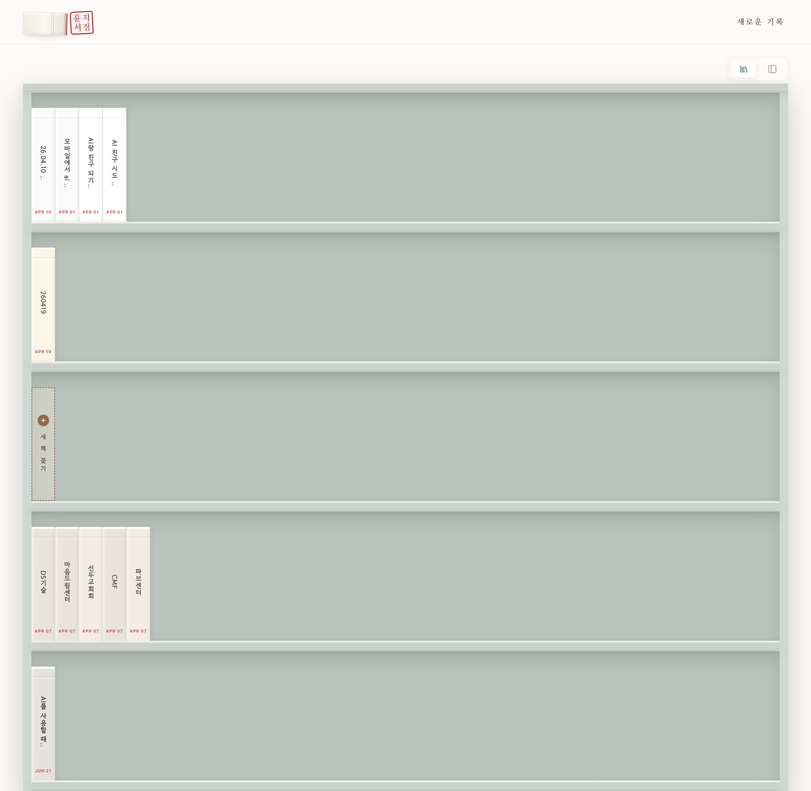

BACK TO LIST
윤지서점
아날로그의 감성을 담은 블로그를 만들어보았습니다. 기획적인 내용 부터 데이터의 연동까지 하고 싶지만 할 수 없었던 것들을 AI를 이용하여 표현하였고, 원하던 바가 잘 표현되어 만족하고 있는 프로젝트 중 하나입니다.
이후 추가하고 싶은 내용 1. 사이트의 개인화 현재는 사용자에 대한 구분 없이 작업되어 있지만 로그인 기능을 넣어 개개인이 실제로 사용할 수 있는 사이트로 수정하고 싶다. 2. 목록 순서 변경 기능 실제 책장에서 책의 순서를 바꾸듯이 목록 화면에서 드래그를 통해 책의 순서를 바꾸는 기능을 추가하면 조금 더 의도한 바가 표현 될 것 같다. 3. 디자인 디자인 디테일을 잡고 조금 더 아날로그의 느낌을 추가하고 싶지만 디자인에 대한 역량이 부족하다는 생각이라 추후 디자인에 대한 피드백과 수정 작업을 진행하고 싶다.
